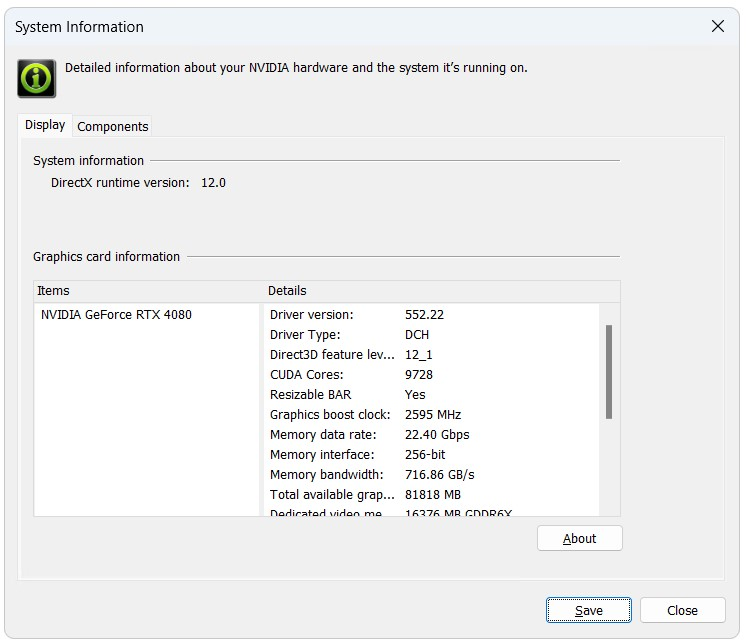
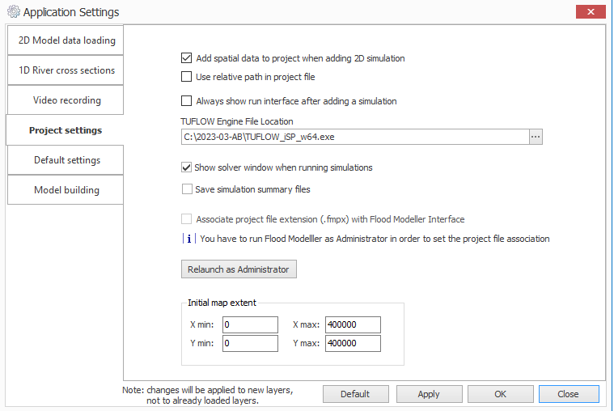
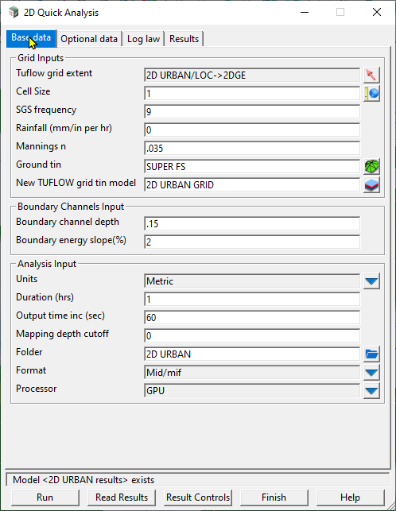
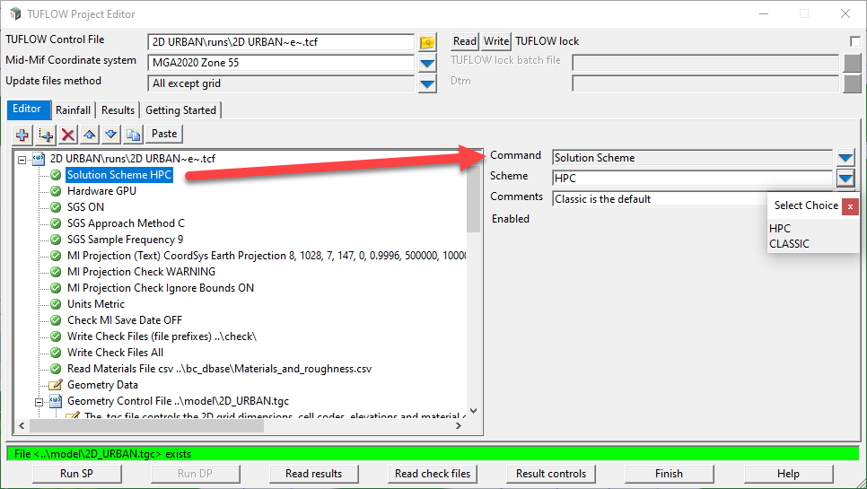
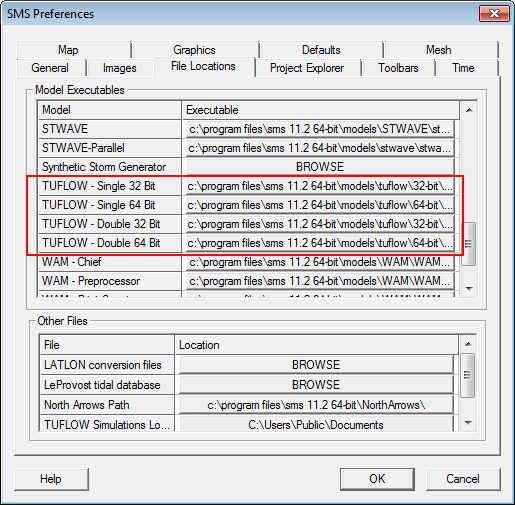

| Command | Description |
|---|---|
The default HPC Courant, shallow wave celerity and diffusion control number limits can be reduced to effectively underclock the simulation. Using the above command factors all three control numbers. For example, a value of 0.8 reduces the default limits by 20%. Reducing the control number limits may be useful if the simulation is exhibiting erratic behaviour or numerical “noise”, although testing has found this is rare in real-world models, and if occurring is more likely to be a sign of poor data or poor model schematisation. |
|
TUFLOW HPC can be run using CPU or GPU hardware. This command defines the hardware to be used for the compute. CPU is the default and will run a simulation using the Central Processing Unit (CPU). GPU will run the simulation using the Graphics Processor Unit (GPU). When running TUFLOW HPC using the GPU hardware module, the pre (reading of data) and post processing (writing outputs) is managed by the standard TUFLOW CPU engine. This allows the user to utilise the extensive range of GIS input functionality available in TUFLOW. Simulation using GPU hardware requires the GPU Hardware Module in addition to a standard TUFLOW licence. |
|
TUFLOW HPC is available in both single precision and double precision. If the simulation is started with the single precision version of TUFLOW, the HPC solver will utilise a single precision version. If the simulation is started with the double precision version of TUFLOW, CHECK 2420 will be output by default stating that the single precision version should be used. The calculation method in TUFLOW HPC uses depth due to its explicit nature, unlike TUFLOW Classic that uses water level due to its implicit scheme. This means that precision issues when using the Classic solver, such as when applying a very small rainfall to a high elevation, are not applicable in HPC. For more information see Section 13.3.2.2. Unless testing shows that single and double precision produce significantly different results, use the single precision version of TUFLOW for all TUFLOW HPC simulations. Note: Double precision solutions on GPU cards can be four times slower than single precision! Also, NVIDIA Cards with a compute capability of 1.2 or less are only able to run single precision versions. The HPC DP Check command allows the user to disable this check should double precision be required, or increase it to an ERROR. |
|
Sets the order of the temporal solution. The default is the recommended 4\(^{th}\) order temporal solution, and this command is usually not specified. We recommend the use of the 4\(^{th}\) order temporal scheme as it is unconditionally stable with adaptive timestepping turned on and has been found to give accurate results and is results are not affected due to changing the timestepping. Lower order schemes save a little on memory requirements but are more prone to instability and in some cases unreliable results that are sensitive to the timestepping intervals. |
|
Controls the GPU device or devices to be used for the simulation if multiple CUDA enabled GPU cards are available in the computer or on the GPU itself. |
|
This command is used to select the desired solution scheme for the compute. Use “HPC” to call TUFLOW HPC’s finite volume 2\(^{nd}\) order solver (recommended over the 1\(^{st}\) order alternative). |
|
If adaptive timestepping is active (the default), the timestep value is only used for the very first step. To allow the same command to be used for either a TUFLOW Classic or a HPC simulation the timestep value is divided by 10 for the initial HPC timestep, and enter a timestep value similar to that that you would use for TUFLOW Classic. If adaptive timestepping is off, sets the fixed timestep. The timestep will always be much smaller than TUFLOW Classic’s timesteps as the scheme is explicit (TUFLOW uses an implicit scheme). As a general rule of thumb specify a timestep that is around one tenth of the TUFLOW Classic timestep you would use. |
13 Managing and Starting Simulations
This chapter provides guidance on model naming conventions and how TUFLOW’s powerful Variables, Events and Scenarios functionalities may be used to simulate any number of scenarios and events from a single control (.tcf) file.
The latter part of the chapter discusses the installation of TUFLOW, the different TUFLOW dongle types and how to start a simulation, both as a standalone TUFLOW simulation and in conjunction with third-party software.
Finally, there is a section on the reproducibility of results when using different hardware.
13.1 File Naming
Each hydraulic modelling study can easily generate hundreds, if not thousands, of model input files in addition to a large number of check and result files. Devising a sound naming convention as part of the modelling process is key to modelling that is easily interpreted, logical, efficient, quick to error check and quality control, and provide traceability for quality assurance.
The examples below are presented as guidance only. They demonstrate the progression of a simple model naming convention to a more complex version that incorporates different flood events and scenarios. The examples focus on the name of the .tcf control file, as this determines the prefix assigned to both the 1D and 2D check and result files.
A general recommendation is to avoid long filenames and use acronyms where possible. For example, for a simulation of the Brisbane River for the existing topography for the 1 in 100, 12 hour duration flood event, “BR_Exg_100yr_12hr_001.tcf” is preferable to “Brisbane_River_Existing_100year_12hour_001.tcf”.
Example 1: Basic
MODEL_001.tcf
In its simplest form, the names of the majority of TUFLOW models consist of a few characters denoting the study name and a version number. The characters denoting the study name are typically included in all input files to specify that the files are unique or created for this study. The numbering is used to denote different versions of the model, where each time a change is made and the model re-simulated, the version number is incremented. Use of a model version numbering system ensures it is clear which model input files generated which model output files. This is particularly important when troubleshooting or quality controlling a model.
Example 2: Event Naming
MODEL_0100F_001.tcf
MODEL_1000F_001.tcf
Most hydraulic modelling studies require the simulation of more than one event. In these cases, it is preferable to include the name of the event within the simulation name rather than simply incrementing the model version number. Note that the same number of characters is retained for the 100-year (0100F) and 1000-year (1000F) events and, in this case, the use of ‘F’ to denote the simulation is a fluvial flood event. Retaining the same number of characters (for example, by using preceding zeroes) ensures when the files are viewed in Windows Explorer, they are presented in ascending order. The model version number is the same in this example and tells the user that the same version of the model has been simulated for two different flood events.
Refer to Section 13.2.1 which presents a method to model numerous hydraulic events using a single .tcf control file.
Example 3: Scenario Naming
MODEL_0100F_EXG_001.tcf
MODEL_0100F_PRP_001.tcf
Many hydraulic modelling studies require the simulation of multiple scenarios, such as pre- and post-development topography scenarios or sensitivity testing where one or more model parameters are varied. Incorporating the name of the modelled scenario into the .tcf filename easily differentiates the output files associated with each scenario. The characters used to denote the scenario are typically also used for model input files specific to the scenario. For example, the post-development scenario ‘PRP’ may involve the raising of flood defences, hence the GIS layer used to raise the defences might be named ‘2d_zsh_MODEL_PRP_defence_001.shp’. The presence of this layer in a model simulation of the pre-development scenario ‘EXG’, will immediately highlight to the user that a mistake has been made.
Refer to Section 13.2.2 which presents a method to model one or more scenarios using a single .tcf control file.
13.2 Simulation Management
TUFLOW incorporates powerful functionality for managing the simulation of multiple events and scenarios. These features allow many simulations to be initiated from a single .tcf file (see Section 4.1.5), rather than duplicating model inputs and control files (e.g. *.tcf, *.tgc, *.ecf, *.tbc, *.trfc, BC Database, etc.) for every model variation. In many cases, one set of control files can be used.
Event and scenario simulation management can support an unlimited number of simulations. For example, the TUFLOW Insights Library includes a case study where a single set of control files was used to run 328,886 combinations of model domains, events and scenarios collectively covering the country of Scotland.
There are numerous examples (with associated data downloads) which demonstrate these powerful features:
- eLearning - Bulk Simulation Management Scenarios, Events and Variables
- TUFLOW Tutorial Module 8 - Scenario Management
- TUFLOW Tutorial Module 9 - Event Management
- TUFLOW Example Models - Scenarios, Events and Variables
The following sections of the manual discuss the available options.
13.2.1 Events
TUFLOW’s Events feature enables the design of a single model setup that can be used to simulate multiple events without duplicating any input control files. This not only makes management of the model easier, but it also ensures consistency between the simulations and supports better project quality control.
Most hydraulic modelling studies require the simulation of multiple different historic and design events. For example, a flood study may assess:
- Numerous historic calibration/validation events
- Multiple Annual Exceedance Probability (AEP) events (e.g. 50%, 20%, 10%, 5%, 2%, 1%, 0.5%, 0.2%)
- Multiple rainfall event durations
- Various event temporal pattern options
- Alternative downstream boundary conditions (e.g. storm tides)
- Future climate change scenarios
The total number of simulations to accommodate for the range of event combinations can sum to hundreds, if not thousands.
Multiple events are set up through a TUFLOW Event File (.tef) using the Define Event command. The structure and configuration of a .tef is described in Section 4.1.10. This section focuses on grouping, selecting and applying events in simulations.
The If Event command block controls which commands are executed based on the selected event(s) at run time. Its structure is equivalent to a standard programming structure: If… Else If… Else… End If. Event logic (If Event) can be used in most of TUFLOW’s control files where model inputs or parameters may vary by extent. Event logic is not supported in the TUFLOW External Stress File (Section 4.1.13), Advection Control File (Section 4.1.14) and within a Define Control block inside a TUFLOW Operational Control File (Section 4.1.11) file. See Section 13.2.1.1 below for more information.
All defined events are automatically available as variables and can be referenced in control files. See Section 13.2.3.
13.2.1.1 Event Groups
Up to nine different event groups (e1 to e9) can be specified for a single simulation. Each group can contain an unlimited number of events. Also, If Event blocks can be nested up to 10 levels, see Example 3 below (Section 13.2.1.4). Event groups typically represent independent parameters such as:
- Flood event magnitude: 50%, 20%, 10%, 5%, 2%, 1%, 0.5%, 0.2% AEP
- Storm duration: 1h, 2h, 3h, 4h, 6h, 9h, 12h
- Design event temporal pattern: TP01, TP02, TP03, TP04, TP05, TP06, TP07, TP08, TP09, TP10
- Downstream boundary condition: LAT, HAT, 5 year, 10 year
- Climate change time horizon: 2025, 2050, 2100
The .tef file (see Section 4.1.10) generally lists all available event options and can therefore function as a database of all event options. This is useful for model peer review purposes.
13.2.1.2 Event Naming
When events are defined in a model, the event names are automatically appended to the base .tcf filename to form the output filenames. They are appended in the order they are defined at run time. For example, if the .tcf is MODEL_EXG_001.tcf, then:
- If event 1 = 01AEP and event 2 = 12h, then output filename = MODEL_EXG_001_01AEP_12h
- If event 2 = 02AEP and event 2 = 24h, then output filename = MODEL_EXG_001_02AEP_24h
To control where event name(s) are inserted within the output filename, include ~e~ or ~e<x>~ (where <x> is from 1 to 9) into the .tcf filename. The placeholder is replaced with the corresponding event name when the simulation is run. This naming method is recommended to ensure consistent naming conventions across simulations.
~e~ is effectively the same as ~e1~ and is typically used if there is only one event type being varied.
For example, if the .tcf is MODEL_~e1~_~e2~_EXG_001.tcf, then:
- If e1 = 01AEP and e2 = 12h, then output filename = MODEL_01AEP_12h_EXG_001
- If e1 = 02AEP and e2 = 24h, then output filename = MODEL_02AEP_24h_EXG_001
13.2.1.3 Simulating Events
Two options are available to define the event(s) for a model simulation:
- Command line options:
-eor-e<x>(Table 13.1). This option is best suited for executing bulk simulations. For example:-e1 01AEP -e2 12h - Using the Model Events command in the .tcf: Events are manually specified within the .tcf. This option is suitable for quick “what-if” testing or sensitivity simulations. It is not practical for bulk simulations. Note that if using the
-eor-e<x>option, this will override any events defined using Model Events.
13.2.1.4 Event Examples
The following examples demonstrate different ways to structure and apply events.
Models using events are provided in the TUFLOW Tutorial Module 9 and the Bulk Simulation Management Example Model Dataset on the TUFLOW Wiki.
13.2.2 Scenarios
TUFLOW’s Scenarios feature enables the design of a single model setup that can be used to simulate multiple scenarios without duplicating any input control files. This not only makes management of the model easier, but it also ensures consistency between the simulations and supports better project quality control.
The If Scenario command block controls which commands are executed based on the selected scenario(s) at run time. Its structure is equivalent to a standard programming structure: If… Else If… Else… End If. Up to nine scenario groups can be defined within a model (s1 to s9), each containing unlimited scenario variations. Also If Scenario command blocks can be nested up to 10 levels, see Example 3 below (Section 13.2.2.3).
Scenarios can be implemented in most of TUFLOW’s control files where model inputs or parameters may vary by scenario. Scenario logic is not supported in the TUFLOW External Stress File (Section 4.1.13), Advection Control File (Section 4.1.14) and within a Define Control block inside a TUFLOW Operational Control File (Section 4.1.11).
All defined scenarios are automatically available as variables and can be referenced in control files. See Section 13.2.3.
13.2.2.1 Scenario Naming
When scenarios are defined in a model, the scenario names are automatically appended to the base .tcf filename to form the output filenames. They are appended in the order they are defined at run time. For example, if the .tcf is MODEL_EXG_001.tcf, then:
- If scenario 1 = 5m and scenario 2 = opA, then output filename = MODEL_EXG_001_5m_opA
- If scenario 2 = 10m and scenario 2 = opB, then output filename = MODEL_EXG_001_10m_opB
To control where scenario name(s) are inserted within the output filename, include ~s~ or ~s<x>~ (where <x> is from 1 to 9) into the .tcf filename. The placeholder is replaced with the corresponding scenario name when the simulation is run. This naming method is recommended to ensure consistent naming conventions across simulations.
~s~ is effectively the same as ~s1~ and is typically used if there is only one scenario type being varied.
For example, if the .tcf is MODEL_~s1~_~s2~_EXG_001.tcf, then:
- If s1 = 5m and s2 = opA, then output filename = MODEL_5m_opA_EXG_001
- If s1 = 10m and s2 = opB, then output filename = MODEL_10m_opB_EXG_001
13.2.2.2 Simulating Scenarios
Two options are available to define the scenario(s) for a model simulation:
- Command line options:
-sor-s<x>(Table 13.1). This option is best suited for executing bulk simulations. For example:-s1 5m -s2 opA - Using the Model Scenarios command in the .tcf: Scenarios are manually specified within the .tcf. This option is suitable for quick “what-if” testing or sensitivity simulations. It is not practical for bulk simulations. Note that if using the
-sor-s<x>option, this will override any scenarios defined using Model Scenarios.
13.2.2.3 Scenario Examples
The following examples demonstrate how If Scenario logic can be used to represent multiple design options within a single model setup.
Models using scenarios are provided in the TUFLOW Tutorial Module 8 and the Bulk Simulation Management Example Model Dataset on the TUFLOW Wiki.
13.2.3 Variables
The Set Variable <name> command is used to define a variable that can be referenced throughout a TUFLOW model. Variables provide a structured way to centralise model parameters and reuse them consistently across multiple control files.
Variables can be defined in:
- TUFLOW Control Files (.tcf): See Section 4.1.5
- TUFLOW Event Files (.tef): See Section 4.1.6
- Read Files (.trd): See Section 4.1.16
- Override Files: See Section 4.1.17
Read and override files are extensions of the control file into which they are read. Therefore, variables defined within a read or override file are only valid if that file is read into a .tcf or .tef.
Note that all defined events (Section 13.2.1) and scenarios (Section 13.2.2) are automatically available as variables.
Once a variable has been defined, it can be referenced in any control file (*.tcf, *.tgc, *.ecf, *.tbc, etc.). The variables are referenced within control files by <<variable>>. For example:
Set Variable ALT_START_TIME == 1
Start Time == <<ALT_START_TIME>>
13.2.3.1 Variable Examples
The following examples show some helpful uses of variables.
Models using variables are provided in the Bulk Simulation Management Example Model Dataset on the TUFLOW Wiki.
13.3 Installing TUFLOW
TUFLOW is available for both Windows (Section 13.3.1.1) and Linux (Section 13.3.1.2). The software can be obtained by either downloading the executables directly from the TUFLOW Website (Section 13.3.4.1) or via the TUFLOW Installer (Section 13.3.4.2).
This section provides an overview of the available builds, installation structure and considerations for selecting the appropriate precision and platform.
13.3.1 Overview of the TUFLOW Distribution
TUFLOW is distributed in various formats depending on operating system and provides separate executables for single or double numerical precision.
13.3.1.1 TUFLOW on Windows
The TUFLOW Windows release consists of two different versions of the executable as follows:
- TUFLOW_iSP_w64.exe
- TUFLOW_iDP_w64.exe
The iSP and iDP refer to whether the release was compiled using single precision floating point numbers or double precision floating point. Further discussion on single and double precision is provided in Section 13.3.2 below.
The w64 refers to Windows 64-bit. This means that the release was compiled as a 64-bit process binary which will run as a 64-bit process. 64-bit TUFLOW executables can only be run on Windows 64-bit platforms. Whilst TUFLOW no longer provides 32-bit versions, the w64 remains in the name for compatibility reasons. The 32-bit version of TUFLOW is only available for TUFLOW releases prior to 2017-09. Users should use the 64-bit versions where possible.
The Model Platform command can be used to force a simulation to use a w32 or w64 version.
13.3.1.2 TUFLOW on Linux
TUFLOW is also available for Linux platforms. The TUFLOW Linux release is available in three formats. <release> is a placeholder for the release version number (e.g. 2026.0.0):
- Debian family distributions (Debian, Ubuntu, Mint, etc.)
tuflow_<release>-1_amd64.debe.g.tuflow_2026.0.0-1_amd64.deb - RHEL family distributions (Red Hat, CentOS, Rocky, etc.)
tuflow-<release>-1.el9.x86_64.rpme.g.tuflow-2026.0.0-1.el9.x86_64.rpm - Compressed tar archive (.tar.gz)
tuflow-<release>-linux-tar.gze.g.tuflow-2026.0.0-linux-tar.gz
The ‘-1’ denotes the version of the package itself. Typically, this will be ‘-1’, but a ‘-2’ or more would indicate identical software in a package that was updated for other reasons.
On Linux, the files follow a similar naming convention, with a “tuflow-isp” and “tuflow-idp” executable.
Note that for TUFLOW on Linux, there is no mention of 64-bit (like TUFLOW on Windows, Section 13.3.1.1). This is due to 2026.0 being the first TUFLOW version released on Linux, which only contains a 64-bit executable. There are no 32-bit TUFLOW builds for Linux.
See the TUFLOW Wiki page TUFLOW on Linux for further details.
13.3.1.3 Build Identification
Each TUFLOW executable includes a Build ID which uniquely identifies the release, precision and platform. The Build ID is written to the .tlf (Section 14.4.1). For example, for the 2026.0.0 release, single precision, Windows 64-bit version, the Build ID would be 2026.0.0-iSP-w64.
Specific builds can be selected using either:
- Model TUFLOW Build, or
- a combination of:
These commands can be useful for ensuring consistent builds are used across a project.
Note that minor changes in results can occur between different TUFLOW builds. Please refer to Chapter 18 and the TUFLOW Classic/HPC Changelog.
13.3.1.4 System Library Files
Additional library files, .dll on Windows and .so on Linux, are required for the following purposes. Note that all files supplied with a build must remain together in the same directory.
TUFLOW_LINKallows other schemes such as 12D DDA, FloodModeller 1D, EPA SWMM and XPSWMM to dynamically link with TUFLOW.TUFLOW_USER_DEFINEDallows users to customise TUFLOW to suit their purposes (see Section 13.3.3).TUFLOW_HPC/TUFLOW QPCcontains the TUFLOW HPC and TUFLOW Quadtree functionality- .fatbin binary GPU kernel files – older TUFLOW releases may not contain these files as they are only used for GPU simulations. See list below.
- Other supplied libraries are third party components (such as NetCDF and TIFF), and system DLLs required by TUFLOW.
A number of .fatbin (Fat Binary) files are required to run TUFLOW HPC/Quadtree simulations on a GPU card. These are:
hpcKernels_nSP.fatbinhpcKernels_nDP.fatbinqpcKernels_nSP.fatbinqpcKernels_nDP.fatbin
13.3.2 Single and Double Precision
Floating point numbers are stored using either single precision (32-bit real) or double precision (64-bit real):
- Single precision: approx. 6-9 significant digits
- Double precision: approx. 15-17 significant digits
Both TUFLOW Classic and TUFLOW HPC are available in single (iSP) and double (iDP) precision. The reasons to use single or double precision differ between the two solvers, as outlined in the sections below.
13.3.2.1 TUFLOW Classic
TUFLOW Classic uses an implicit matrix-based solution and solves for water level rather than depth (see Section 13.3.2.2 - TUFLOW HPC). As water levels may include large elevation values, precision can become important. For example:
- In a model with elevations below 10mAD (meters above datum), adding a very small rainfall increment can be represented accurately in both single and double precision.
- For example, if a cell has an elevation of 5mAD and 0.000001m of rainfall is applied (within a timestep), the water level in the cell would rise to 5.000001mAD.
- In a model with high elevations (e.g. 1000.000mAD), adding a very small rainfall increment may not change the stored value in single precision due to rounding. This can introduce mass loss. However, if double precision is used, the correct water level is retained and mass is conserved.
- For example, if a cell has an elevation of 1000.000mAD and 0.000001m of rainfall is applied, the water level in the cell would rise to 1000.000001mAD. In single precision, this would be stored as 1000.000mAD (i.e. the added rainfall has disappeared). In double precision, this would be stored as 1000.00000100000mAD.
Whether double precision is required for TUFLOW Classic depends on factors such as elevation, cell size and timestep. There is no simple rule-of-thumb. The recommended approach is to:
- Run the model in both single (iSP) and double (iDP) precision modes
- Compare results and mass error: If the results are unacceptably different or if the mass error is significantly lower in iDP, then iDP should be used.
Note that the choice of single or double precision also impacts simulation times and memory allocation. Double precision (iDP) versions of TUFLOW Classic:
- Have approximately 25% longer simulation time
- Require up to twice the memory usage which limits the ability to run concurrent simulations
In summary, if the results are consistent between iSP and iDP, the iSP version is recommended for improved performance and lower memory demand.
13.3.2.2 TUFLOW HPC
TUFLOW HPC uses an explicit solution and solves for depth rather than water level (see Section 13.3.2.1 - TUFLOW Classic). As the calculations are not performed on large elevation values, the precision issues described for TUFLOW Classic generally do not apply. As a result, most TUFLOW HPC models are accurately solved using single precision.
However, precision testing is still recommended where simulations involve:
- Very small inflows
- Long-term simulations
- Simulations with fine-scale processes, such as groundwater
- 1D-2D linked models that use the ESTRY 1D engine (see Chapter 5) at high elevations
To test which precision to use, it is recommended to:
- Run the model in both single (iSP) and double (iDP) precision modes
- Compare results and mass error: If the results are unacceptably different or if the mass error is significantly lower in iDP, then iDP should be used.
Single precision should be used for TUFLOW HPC simulations unless testing indicates otherwise.
Note that double precision on GPU hardware can be significantly slower. On some devices, up to four times slower than single precision.
If the TUFLOW HPC simulation is started using:
- Single precision (iSP): The HPC solver runs in single precision
- Double precision (iDP): CHECK 2420 will be output by default, recommending single precision. This can be turned off or set to “ERROR” using the HPC DP Check command.
13.3.3 Customising TUFLOW using TUFLOW_USER_DEFINED.dll
The TUFLOW_USER_DEFINED.dll is a legacy feature for TUFLOW Classic on Windows that was primarily used for customising hazard category outputs and is no longer supported as the same service cannot be offered for HPC given its GPU code base.
For the up to date method for customising hazard category outputs, see Section 11.2.3.1.
13.3.4 Installation Options
TUFLOW can be installed on Windows and/or Linux using one of the following methods:
- Executable download (Section 13.3.4.1) – manually downloading and managing the TUFLOW release files
- TUFLOW Installer (Section 13.3.4.2) – installing TUFLOW using an automated installer
Both methods provide the same files. For consistency and ease, it is recommended to use the TUFLOW Installer.
13.3.4.1 Executable Download
TUFLOW can be downloaded directly from the TUFLOW website via the TUFLOW Downloads Page. To download the files, an End User Licence Agreement (EULA) must be accepted.
These files should be extracted into an application directory dedicated to a single version of TUFLOW. Do not mix files from different versions. When a new release or patch becomes available, it is recommended that the existing TUFLOW files are archived before copying the updated files into the engine directory.
13.3.4.2 TUFLOW Installer
The TUFLOW Installer provides an automated method for installing TUFLOW on both Windows and Linux systems.
The installer package can be downloaded as a .msi (Windows), .rpm (Linux) or .deb (Linux) from the TUFLOW website via the TUFLOW Downloads Page. Running the installer will guide the user through the installation process and place the TUFLOW executables and associated files into the appropriate installation directory.
When installing TUFLOW using the TUFLOW Installer, it is recommended that the software is installed in a location accessible to all users on the system. However, if required, TUFLOW can be installed for individual use only. Users should consult with their IT department.
Each new TUFLOW release installed using the TUFLOW Installer will be placed in a separate directory and will not replace existing installations. This allows multiple TUFLOW versions to be accessed, which can be useful for maintaining consistency across different projects. It is recommended to use the default installation directory suggested by the installer. Note that patch releases will replace existing installations, however only security fixes or critical defects that do not affect model results will be released as patches. For example, 2026.0.0 may be replaced by 2026.0.1.
During installation, an End User Licence Agreement (EULA) will be displayed and it must be accepted before the installation can continue.
Once installation is complete, the TUFLOW executables can be run in the same manner as the manually installed versions.
13.4 Running Simulations
13.4.1 Dongle Types and Setup
TUFLOW licences are distributed on one of three forms: via a WIBU Codemeter USB hardware lock dongle, a digital software lock licence or a cloud licence key. Licenses are available as either Local or Network types. Collectively, the full range of available hosting and licence type options includes:
Local or Standalone Licence (on a USB hardware lock dongle or digital software lock licence) – In this form, TUFLOW simulations can only be run on the computer hosting the licence container. The defined licence count limits the number of TUFLOW simulations that can be run simultaneously on that computer. For example, a Local 1 licence allows a single simulation to be run at a time on the machine. A Local 4 licence allows up to 4 concurrent simulations on the machine.
Network Licence on a USB hardware lock dongle or digital software lock licence – In this form, the licence container is hosted on a computer or server and other computers on the same network can access the available licences. The defined licence count limits the number of TUFLOW simulations that can be run in parallel across multiple computers. For example, a Network 5 licence allows up to 5 concurrent simulations, which could all be run on one computer, each on a different computer or any combination in between.
Network Cloud Licence – This licence type has the same functionality as the Network Licence described above, but the licence server is hosted on a WIBU cloud server managed by TUFLOW. There are two available configurations for a Network Cloud Licence.
- Cloud Direct Licence: All modelling computers link directly to the WIBU server over an internet connection.
- Cloud Server Licence: A company server acts as the licence host and connects to the WIBU server over an internet connection. Modelling computers then connect to the company server via the company’s network.
Please email sales@tuflow.com for a quote to purchase a TUFLOW licence.
Refer to the TUFLOW Wiki Licensing Page for further details regarding all of the above licencing options.
TUFLOW transitioned to the WIBU licensing platform in 2010 as the previous provider, ‘Softlok’, did not support 64-bit systems. The older ‘Softlok’ dongles are no longer supported. If using TUFLOW versions prior to the 2010 release (2009-07, 2008-08, 2007-07 and 2006-06), the ‘DB’ release builds will need to be used to function with a WIBU Codemeter USB dongle hardware lock. The WIBU Codemeter digital software lock licence and cloud licencing were introduced in the 2016-03-AF release and are not available in earlier release versions.
13.4.1.1 Protocols for Accessing Dongles
If more than one type of dongle is available the protocols for taking and checking licences are:
- WIBU Codemeter licences are searched for, and if a licence is free it is taken.
- If no licence is available, you can optionally set for TUFLOW to continue to try and find an available WIBU dongle licence. This is achieved using the “C:\BMT\TUFLOW_Dongle_Settings.dcf” file described below. This is useful if there are no free licences and you wish to start a simulation (the simulation will start once a free licence becomes available).
- Once a simulation is under way, if the licence is lost, TUFLOW will try to regain a licence. For example, if a simulation is started using a local WIBU licence and that licence is disconnected, TUFLOW will search for another available licence to continue the simulation (see Section 13.4.1.1.1).
There are four varieties of licence type / vendor:
- BMT physical USB lock (dongle)
- BMT software lock (tied to a particular machine)
- BMT cloud licence
- Aquaveo (SMS) USB lock
Jacobs (Flood Modeller) is a TUFLOW reseller. Historically, TUFLOW software sales processed through Jacobs were supplied with licences issued by Jacobs, using WIBU Firm Codes 10198 and 5000219.
TUFLOW client licences are now fully managed by TUFLOW (BMT). As a result, support for the legacy Jacobs-issued licences has been removed from the 2026.3.0 release onwards. If Jacobs licence firm codes are specified in the TUFLOW licence settings file (.lcf) using the WIBU FIRM Code Search Order command, they will be ignored.
If you are a Jacobs client and have not yet transitioned to a TUFLOW (BMT) licence, please contact the Jacobs sales team at sales@floodmodeller.com to obtain the necessary licence update.
With numerous licencing options available, setting the preferred licence type can (slightly) speed the simulation start-up. The licence search order can be set via a licence control file “TUFLOW_licence_settings.lcf”, this replaces the TUFLOW_Dongle_Settings.dcf. Note that this file can occur in several locations. When looking for a licence setting file TUFLOW searches in the following locations:
- A “TUFLOW_licence_settings.lcf” in the same location as the TUFLOW executable.
On Windows, additionally:
- A “TUFLOW_licence_settings.lcf” in a TUFLOW folder in the “ProgramData” environment variable location. By default this will resolve to C:\ProgramData\TUFLOW\TUFLOW_licence_settings.lcf. Entering %programdata% into the windows explorer path will take you to the location.
- C:\BMT\TUFLOW_Licence_Settings.lcf
- C:\BMT\TUFLOW_Dongle_Settings.dcf
If no licence settings files are found, TUFLOW defaults to the order listed above. WIBU Firm Code Search Order can be used to control the search order in the TUFLOW_licence_settings.lcf file.
Use of C:\BMT\ above is supported on Windows for legacy reasons and is not recommended as read/write access to local drives is now often blocked for protection against hackers.
13.4.1.1.1 Licence Switching Options
TUFLOW supports licence switching between dongles of the same type, such as from one local WIBU dongle to another, or between network WIBU dongles. Switching between different licence types, for example from a WIBU dongle to a Softlok dongle, is not supported.
For example, if a local WIBU dongle is disconnected during a simulation, TUFLOW attempts to locate and use another local WIBU licence to continue the simulation. TUFLOW does not look for a network licence when switching between licence types. Similarly, when connectivity to a network licence is lost, it would not look for a local licence.
13.4.1.2 TUFLOW_Licence_Settings.lcf File
The TUFLOW Licence Settings (.lcf) file can be used to set WIBU settings, such as retry time interval and count. It has the same form and notation as a TUFLOW .tcf file.
This file is optional and if not found the settings below are the default:
! Use this file to set general and WIBU specific dongle parameters
! Use ! or # to comment out commands or make comments
Simulations Log Folder == C:\ProgramData\TUFLOW\<username>\log ! Path or URL to global .log file
WIBU Retry Time == 60 ! seconds. Values less than 3 are reset to 3. Default = 60.
WIBU Retry Count == 0 ! Use -1 for indefinitely.
WIBU Dongles Only == OFF ! If ON, searches for WIBU dongles only. Default is OFF.In the above, the:
- Simulations Log Folder sets the folder path or URL to a folder for logging all simulations. If the keywords “DO NOT USE” occur within the folder path or URL, this feature is disabled. Also see Simulations Log Folder.
- WIBU Retry Time sets the interval in seconds for retrying to take a licence or regain a lost licence. The default is 60 and values less than 3 are set to 3.
- WIBU Retry Count sets the number of times to retry for a licence at the start of a simulation. By default, if a licence is lost during the simulation, TUFLOW tries indefinitely to regain a licence so as not to lose the simulation.
- WIBU Dongles Only if set to ON will force TUFLOW to only search for WIBU dongles.
13.4.1.3 Dongle Failure during a Simulation
If TUFLOW fails to recognise a network lock during a simulation (e.g. the network dongle server computer is down) it enters a holding pattern and continues trying until a license is found.
For local, standalone locks, TUFLOW prompts with a message that the lock could not be found. If it’s a USB lock try a different USB port, and press Enter to continue.
13.4.2 Starting a Simulation
A TUFLOW simulation can be initiated in multiple ways, however in each case the TUFLOW executable is started and the TUFLOW Control File (.tcf - see Section 4.1.5) is provided as the input argument. Additional command-line switches can also be specified to modify how the simulation runs. These switches are summarised in Table 13.1.
A TUFLOW simulation can be started in several ways, including:
- From a text editor
- For example, Notepad++
- Using a command-line script
- For example, a batch file on Windows or a Bash script on Linux
- From within GIS software:
- QGIS via the QGIS TUFLOW Plugin
- ArcMap via the use of the ArcTUFLOW toolbox - supported on Windows only
- MapInfo (through the MiTools add-on) - supported on Windows only
- From an interactive command-line session
- For example, the Command Prompt or PowerShell on Windows or a Terminal shell on Linux
- Via context menus (using the right mouse button) in a file explorer
- Via a runner such as the TUFLOW Runner or TRIM - supported on Windows only
This section focuses on initiating simulations via command-line scripts, as this is typically the simplest method for running several simulations. Further information on alternative methods is provided on the TUFLOW Wiki Running TUFLOW page. Information specific to running TUFLOW on Linux is provided in Section 13.4.2.4.
13.4.2.1 Script Examples and Run Options (Switches)
TUFLOW simulations are commonly started from a script file that executes one or more command lines.
- Windows: script files typically use the .bat extension and are executed by the Windows command interpreter.
- Linux: scripts are usually Bash scripts (typically text files with no extension) and must have executable permissions (e.g. using
chmod +x <filename>). When a bash script is primarily intended to be sourced (i.e. “. script.sh”), it will often have the file extension .sh, but this is not required.
Some commonly used switches are demonstrated in the examples below. A complete list of available command-line switches is provided in Table 13.1. Switches are supported on both Windows and Linux, unless noted otherwise.
Running a Single Simulation
The simplest script consists of a single command specifying the TUFLOW executable, followed by the .tcf file (Section 4.1.5):
<TUFLOW Executable> <TUFLOW Control File>Example on Windows (batch file):
"C:\Program Files\TUFLOW\TUFLOW 2026.0\TUFLOW_iSP_w64.exe" MR_H99_C25_Q100.tcfExample on Linux:
/opt/tuflow/tuflow-2026.0/bin/tuflow-isp MR_H99_C25_Q100.tcfThe locations in these examples show where TUFLOW will be installed for all users when using the .msi installer on Windows, or the .deb or .rpm packages on Linux. A ‘portable’ copy of TUFLOW can be downloaded in .zip format for Windows, and .tar.gz for Linux, similar to previous distributions of TUFLOW.
Running Multiple Simulations
Multiple simulations can be executed sequentially by listing several commands in the script.
Example on Windows (batch file):
"C:\Program Files\TUFLOW\TUFLOW 2026.0\TUFLOW_iSP_w64.exe" -b MR_H99_C25_Q100.tcf
"C:\Program Files\TUFLOW\TUFLOW 2026.0\TUFLOW_iSP_w64.exe" -b MR_H99_C25_Q050.tcf
"C:\Program Files\TUFLOW\TUFLOW 2026.0\TUFLOW_iSP_w64.exe" -b MR_H99_C25_Q020.tcf
pauseThe -b (batch) switch (Table 13.1) suppresses prompts that would otherwise pause execution at the end of a simulation. This ensures that one simulation proceeds on to the next without any need for user input. In Windows scripts, the pause command prevents the Console window from closing automatically after completion of the last simulation so the simulation status can be reviewed.
Testing Model Inputs
The -t (test) switch (Table 13.1) processes the model inputs but does not run the simulation. This is very useful for checking that data and file references are valid before performing the full simulation. The -t switch runs TUFLOW until just before the hydrodynamic computations begin. Any input errors or warnings will be reported.
Example on Windows (batch file):
"C:\Program Files\TUFLOW\TUFLOW 2026.0\TUFLOW_iSP_w64.exe" -b -t MR_H99_C25_Q100.tcfRunning Without a Licence
Since the 2018-03-AA TUFLOW release, the -t (test) switch can be used without a TUFLOW licence, by specifying the -nlc (no licence check) switch (Table 13.1).
Example on Windows (batch file):
"C:\Program Files\TUFLOW\TUFLOW 2026.0\TUFLOW_iSP_w64.exe" -b -t -nlc MR_H99_C25_Q020.tcfNote that when the -nlc switch is used, no diagnostics are reported. As such this switch should not be used whilst a model is being developed or built.
Executing the Simulation
Once the model inputs have been verified, the simulation can be executed by removing the -t switch (and the -nlc switch, if used) or replacing it with the -x (execute) switch (Table 13.1). The -x switch is optional because execution is default behaviour, but it is often included to make it easier to switch between test (-t) and execution (-x) modes when editing scripts.
Example on Windows (batch file):
"C:\Program Files\TUFLOW\TUFLOW 2026.0\TUFLOW_iSP_w64.exe" -b -x MR_H99_C25_Q100.tcfSwitch Prefixes
It is recommended that command-line switches be prefixed by “-” (short dash or hyphen/minus sign) and this is the only option when using TUFLOW on Linux. As such, when switches are mentioned in this manual, they will be prefixed with “-” (e.g. -b).
Note that on Windows the following are also accepted and are treated as equivalent:
- “–” (long dash)
- “/” (forward slash)
When copying from word documentation or emails, the hyphen may be automatically replaced with a long dash. This may be difficult to spot in a text editor, particularly if using a fixed width font.
| Switch | Description |
|---|---|
-acf |
Automatically create folders (the default). The default setting which automatically creates missing folders, preventing dialog prompts when non-existent folders (e.g. results folders) are encountered. If a folder cannot be created, a dialog will appear. See -qcf switch to disable this. |
-b |
Batch mode. Used when running multiple simulations in succession from a script (see Section 13.4.2.1). Suppresses the “TUFLOW simulation has finished” dialogue and/or any prompt to press Enter, allowing the script to continue to the next simulation. |
-c Optional additional flags of “a” , “l”, “p” or “ncf”. |
Copy. Creates a copy of a TUFLOW model for transfer or archiving (also see the -pm switch as an alternative). By default, -c copies only the files read by TUFLOW. For MapInfo users, only the .mif and .mid files are copied (see “a” flag below). The copy is created in a folder named <tcf_name>.tcf_copy (or <tcf_name>.tcf_copy_all if “a” flag is used) in the same directory as the .tcf. This folder will contain all input files (including the full folder structure). Optional flags (can be combined with -c in any order):
Notes:
|
-cs<level> |
Case sensitivity. Controls case sensitivity of file paths when running TUFLOW on Linux. This switch can be useful for models developed on Windows. The case sensitivity can be set to one of the following levels:
For example:
|
-e<name> -e{1-9}<name> |
Event. Specifies an event name to be used by Define Event in a TUFLOW Event File (.tef - Section 4.1.10). Also see Section 13.2.1 and Model Events.
For example:
|
-et<time_in_hours> |
End time. Specifies the simulation end time (in hours). This will override the End Time settings in the .tcf, event files (.tef) and override files. |
-nc |
No console. Suppresses (hides) the console window (Section 14.1) during a simulation. The simulation runs in the background and remains visible in the System Monitor (e.g. Task Manager).
It is strongly recommended to redirect console output to a text file. For example:
When the -nc switch is used, TUFLOW runs without requiring user input (e.g. invalid or missing .tcf files will terminate the simulation with an error rather than prompting. This feature was introduced in the 2018-03-AB TUFLOW release. Note: The -nc switch serves no purpose when running on Linux. |
-nlc |
No licence check. Disables the licence check, allowing the -c (copy) or -t (test) options to run without a TUFLOW licence. No diagnostic output is generated (e.g. messages layer) is generated when running without a licence. Remove -nlc if diagnostics are required. |
-nmb |
No message boxes. Suppress use of message boxes to prompt the user. All prompts will be via the console window. Note: The -nmb switch serves no purpose when running on Linux. |
-nq |
No queries. Suppresses the termination dialog when stopping a simulation with Ctrl+C. The simulation will terminate immediately without prompting. Note: The -nq switch serves no purpose when running on Linux. |
-nt<number_of_threads> |
Number threads. Sets the number of CPU threads (cores) to use for a TUFLOW HPC simulation. The number of threads requested is limited to the number of CPU cores available on the machine, and the available TUFLOW Thread licences. For example, -nt2 would run using two CPU threads. |
-nua |
No Ulimit Adjustment. Linux only, do not modify the ulimit values. Without this option, if the soft limit is lower than the hard limit, the soft limit is increased to the hard limit. |
-nwk |
Network. Force TUFLOW to search for a network licence (i.e. skip the search for a local licence). |
-od<drive> |
Output drive. Set the Output Drive for a simulation. For example, -odC will redirect all outputs to the C:\ drive. Note: The -od switch serves no purpose when running on Linux. |
-oz<name> |
Output zone. Specifies one or more output zones to be included in the model. Serves the same purpose as the .tcf command: Model Output Zones. For example For more information on Output Zones, refer to Section 11.2.5. |
-pm Optional additional flags of “all” , “l” or “ini”. |
Package model. Packages a model by copying all input files for all events and scenarios. By default, the destination folder is named pm_<tcf_name> and is located in the same folder as the .tcf. This can be overridden using a .ini file. Unlike the -c switch, no data processing occurs during the copy, making it is substantially faster, but does not check for valid inputs. This switch does not require a TUFLOW licence. Optional flags (can be combined in any order):
Three switches are available for handling the binary processed files (xf files) created by TUFLOW. These must be used in conjunction with the -pm switch.
For example:
|
-pu<id> |
Processing units. Selects the processing unit(s) for the simulation. This switch only applies to the HPC GPU solver.
|
-qcf |
Query creation folder. Set the create folder query dialog to appear, rather than the default functionality where TUFLOW automatically creates folders (see the -acf switch above). Note: The -qcf switch serves no purpose when running on Linux. |
-s<name> -s{1-9}<name> |
Scenario. Specifies one or more scenario names for use with If Scenario blocks. Also see Section 13.2.2 and Model Scenarios.
For example:
|
-slp |
Simulation log path. A legacy option for Softlok (blue) dongles to set the path to a folder on the intranet to log all simulations initiated from the lock. Refer to the 2018 manual or earlier for details. (See Section 13.4.1.2 for equivalent option for WIBU Codemeter licences, and also Simulations Log Folder) |
-st<time_in_hours> |
Start time. Specifies the simulation start time (in hours). This will override the Start Time settings in the .tcf, event files (.tef) and override files. |
-t |
Test input only. Processes all input data including writing of check files, but does not start the simulation. Useful for checking that the simulation initialises without error, prior to carrying out the simulation. |
-wibu |
Search for a WIBU Codemeter licence only. |
-x |
eXecute the simulation (the default). |
13.4.2.2 Copy/Package Model from Script Files
TUFLOW can be run in copy mode (-c) to create a duplicate of a model for archiving or transfer. The -c switch copies the input files used by a simulation (for a single set of events/scenarios). This performs a model initialisation, including error checking. The -nlc (no licence check) switch may be used to perform this operation without a licence. Alternatively, the -pm (package model) switch copies all input files for all events and scenarios defined in the model. More information on these switches can be found in Table 13.1 above.
Further details can be found on the TUFLOW Wiki.
13.4.2.3 Advanced Script Files
Scripts can be made more flexible by using variables and control logic.
The example below defines a variable containing the path to the TUFLOW executable. The advantage of this is that if the path to the executable changes or if a different version needs to be used, only one location needs to be changed.
Example (Windows .bat):
set TUFLOWEXE="C:\Program Files\TUFLOW\TUFLOW 2026.0\TUFLOW_iSP_w64.exe"
set RUN=start "TUFLOW" "%TUFLOWEXE%" -b
%RUN% MR_H99_C25_Q100.tcf
%RUN% MR_H99_C25_Q050.tcf
%RUN% MR_H99_C25_Q020.tcfScripts may also include loops or other control logic to automate the execution of multiple events or scenarios. An example for Windows (.bat) is provided below. For further examples of running multiple events and scenarios from the same .tcf file, see Section 13.2.1 and Section 13.2.2.
Example (Windows .bat):
REM This sets the variables as local, another batch file can use the same variables
SetLocal
REM Set up variables
set TUFLOWEXE="C:\Program Files\TUFLOW\TUFLOW 2026.0\TUFLOW_iSP_w64.exe"
set RUN=start "TUFLOW" "%TUFLOWEXE%" -b
set A=Q010 Q020 Q050 Q100 Q200
set B=10min 30min 60min 120min 270min
REM Loop through each simulation
FOR %%a in (%A%) do (
FOR %%b in (%B%) DO (
%RUN% -e1 %%a -e2 %%b filename_~e1~_~e2~.tcf
)
)
pauseFurther guidance on advanced batch files, including looping examples can be found on the TUFLOW Wiki Run TUFLOW from a Batch File page.
13.4.2.4 Running TUFLOW on Linux
Since the 2026.0.0 release, TUFLOW Classic/HPC is available for Linux systems. Installation instructions, system requirements and further information is provided on the TUFLOW Wiki page: TUFLOW on Linux.
An example execution of TUFLOW from the command line is provided below. The exact command used will depend on the installation location, executable selected, model location and any command line options applied.
/opt/tuflow/tuflow-2026.0/bin/tuflow-isp -cs1 ./runs/EG00_001.tcfThis example runs the TUFLOW example model EG00_001.tcf with single precision and case sensitivity (-cs<level>) enabled. See Table 13.1 for further details on available command line switches.
Note that TUFLOW on Linux will automatically interpret backslashes as forward slashes when processing file paths referenced in the control files.
13.4.3 Running TUFLOW HPC
The front end of TUFLOW Classic and TUFLOW HPC are identical. No modification of the model input is needed to utilise the TUFLOW HPC solver (in CPU or GPU compute mode). Similarly, the output data is written by TUFLOW in the same output formats and data types irrespective of whether Classic or HPC solvers are used.
The .tcf Solution Scheme command is used to switch the solution scheme from TUFLOW Classic (the default) to TUFLOW HPC.
Hardware is used to access GPU hardware (CPU is the default). As such, to convert a model from TUFLOW Classic to TUFLOW HPC and run using GPU hardware only requires two additional TCF commands in most cases:
Solution Scheme == HPC
Hardware == GPU
With TUFLOW HPC it is possible to use multi-GPU cards to split the simulation across multiple cards to reduce run times or access more GPU memory. This is carried out either by using the GPU Device IDs command or with the processing unit command line switch (“-pu<device id>”). More information can be found here. It is also possible to simulate multiple simulations on a single GPU card, should model memory requirements allow it, however, the simulations will slow down proportionately.
TUFLOW HPC simulations are started in the same manner as a standard TUFLOW simulation and explained in Section 13.4.2.
13.4.3.1 TUFLOW HPC and GPU Module Commands
The following .tcf commands (apart from Timestep) are commands specific to the TUFLOW HPC solver:
13.4.3.2 Compatible Graphics Cards
TUFLOW HPC’s GPU hardware module requires an NVIDIA CUDA enabled GPU card. A list of CUDA enabled GPUs can be found on the following website: https://developer.nvidia.com/cuda/gpus.
To check if your computer has an NVIDIA GPU and if it is CUDA enabled:
- Right click on the Windows desktop.
- If you see “NVIDIA Control Panel” or “NVIDIA Display” in the pop-up dialogue, the computer has an NVIDIA GPU.
- Click on “NVIDIA Control Panel” or “NVIDIA Display” in the pop-up dialogue.
- The GPU model should be displayed in the graphics card information.
- Check to see if the graphics card is listed on the following website: https://developer.nvidia.com/cuda/gpus.
The following screen images show the steps outlined above, this may vary slightly between NVIDIA GPU card models.


More information on the card can be found in the “System Information” section, which is accessed from the NVIDIA Control Panel. The system information contains more details on the following:
- The number of CUDA cores.
- Frequency of the graphics, processors and memory.
- Available memory including dedicated graphics and shared memory.

On both Windows and Linux, the command line utility nvidia-smi can be executed when NVIDIA drivers have been installed. This lists the exact models of GPUs installed, and provides many options for requesting technical details of installed hardware, which can be queried with nvidia-smi --help.
On the NVIDIA website, each CUDA enabled graphics card has a “Compute Capability” listed. For cards with a compute capability of 1.2 or less, only the single precision version of the GPU Module can be utilised. However, benchmarking has indicated that the double precision version, except in rare situations, is NOT required and that for nearly all GPU simulations, TUFLOW_iSP engine versions should suffice. Refer to Section 13.3.2.
Extensive GPU hardware benchmarking has been undertaken to assist users who are upgrading hardware for TUFLOW modelling, with numerous hardware options tested for their speed performance. The results are provided on the TUFLOW Wiki Hardware Benchmarking page.
13.4.3.3 Updating NVIDIA Drivers
It is recommended to use recent and stable versions of the NVIDIA drivers for your hardware and operating, as drivers shipped with the operating systems are frequently out of date. To update on Windows, open the NVIDIA Control Panel (by right clicking on the desktop and selecting NVIDIA Control Panel or NVIDIA Display). Once the control panel has loaded, select Help >> Updates from the menu items. For further guidance see the TUFLOW Wiki Updating NVIDIA Drivers Wiki Page page.
If new drivers are available, please download and install these by following the prompts.
Even if not prompted by the system, a restart is recommended to ensure the new drivers are correctly detected prior to running any simulations.

13.4.3.4 NVLink – Multi-GPU Performance (HPC Only)
NVLink is a connection (cable) for NVIDIA GPU devices providing peer-to-peer (direct) access between GPUs, rather than having to communicate via the CPU, giving faster communication. For example, data transfer rate for the RTX 2080 Ti is 32GB/s on the CPU PCIe and 100 GB/s via an NVLink. The TUFLOW 2020-01 and later releases automatically recognise and utilise any peer-to-peer (p2p) access between GPUs that is possible according to the hardware setup. Peer-to-peer access typically requires an NVLink connector between GPUs, or in some cases peer-to-peer access can occur via the PCI bus if all cards are placed into TCC driver mode.
Whilst testing thus far has not produced a huge jump in performance, it is expected greater gains in the future will arise as it is increasingly possible to connect to large numbers of GPU devices, especially Cloud-based instances. The user can choose to disable peer-to-peer GPU access by specifying the .tcf command:
GPU Peer to Peer Access == DISABLED | {ENABLED IF AVAILABLE}.
This can also be specified using the command line argument -p2p0 to disable, or -p2p1 to enable (if available). Peer-to-peer access in rare occasions has failed to work when a peer connection has been reported as possible by the NVIDIA console or API.
13.4.3.5 Troubleshooting
If you receive the following error when trying to run the TUFLOW GPU model:
TUFLOW GPU: Interrogating CUDA enabled GPUs ...
TUFLOW GPU: Error: Non-CUDA Success Code returnedPlease try the following steps:
- Check the compatibility of your GPU card and whether the latest drivers are installed (see instructions in Section 13.4.3.2).
- Test with a user account that has administrator privileges as these may be required for running computations on the GPU.
- If multiple monitors are running from the video card, try running with only a single monitor.
If the above steps fail to get the simulation to run, please email the NVIDIA system information (see Figure 13.4) and TUFLOW log file (.tlf) to support@tuflow.com.
13.4.4 Running TUFLOW 1D Only Simulations
TUFLOW is set up to run as either a 2D model or as a 1D/2D model. It is, however, possible to run a TUFLOW 1D only model by including a small ‘dummy’ 2D domain within the model files. The 2D domain can be set up with the .tgc file and can be small, contain few cells of uniform material type and elevation values. The .tbc file will be set up so that the 2D domain does not receive any flows and will not impact simulation runtimes. The 1D model can then be constructed within the .ecf and the simulation set up within the .tcf as per usual. An example model exists on the TUFLOW User Gitlab Page.
13.5 Using TUFLOW with Flood Modeller, SWMM, XP-SWMM, 12D or from SMS
On Windows, TUFLOW supports the linking with third-party external 1D schemes such as Flood Modeller (Jacobs), SWMM (USA EPA SWMM Version 5), XP-SWMM (Autodesk), 12D (12D Solutions) as well as integration within the SMS GUI (Aquaveo). Flood Modeller (formerly known as ISIS), XP-SWMM and 12D executables access the TUFLOW hydraulic computational engine via the TUFLOW_LINK.dll. EPA SWMM (Version 5) is built into the standard TUFLOW release (2023-03-AF build or later). Flood Modeller, XP-SWMM, 12D and SMS are generally distributed with the latest supported version of TUFLOW at the time of release. It is possible to utilise different versions of TUFLOW with external 1D schemes using the processes described in the following sections.
Linking with third-party 1D schemes is not supported on Linux.
13.5.1 Using TUFLOW with EPA SWMM
When running a TUFLOW - SWMM model, TUFLOW controls the execution of the simulation. SWMM input commands are specified within a SWMM Control File (.tscf). The SWMM control file is referenced in the TUFLOW Control File (.tcf) and the available commands listed in Appendix I.
The SWMM Control File can reference multiple SWMM input files (inp) potentially varying by scenario. These input files are merged giving preferences to later files allowing for the overriding (upgrading) of existing features. After the input files are merged, the final SWMM model will be placed in the TUFLOW output folder and will be executed from there. The report and output files generated by the SWMM engine will also be placed in the TUFLOW output folder.
13.5.2 Using TUFLOW with Flood Modeller
Flood Modeller is shipped with the latest release of TUFLOW available at the time of development. It is possible to set Flood Modeller up to use a different version of TUFLOW. Before changing the version of TUFLOW, firstly check the compatibility between Flood Modeller and TUFLOW versions in Figure 10.15. To utilise a newer, or different, version of TUFLOW with Flood Modeller, use the Flood Modeller interface to set the TUFLOW Engine File location to the path of the TUFLOW executable required in the Project Settings as shown in Figure 13.6.

If running TUFLOW HPC utilising GPU hardware, it is important that the Flood Modeller folder contains copies of four TUFLOW files (aka kernels). The Flood Modeller folder is called the “bin” folder and is located (by default) in “C:\Program Files\Flood Modeller”. It is important that the kernel files in the Flood Modeller ‘bin’ folder match those of the TUFLOW version specified in the Flood Modeller project settings. For TUFLOW versions 2023-03-AA release or later, the names of the kernels have changed and are:
- hpcKernels_nSP.ptx
- hpcKernels_nDP.ptx
- qpcKernels_nSP.ptx
- qpcKernels_nDP.ptx
If you need to use a later release of TUFLOW or if you find that the link in a Flood Modeller-TUFLOW coupled model is failing with a ERROR 3999 message (and an error description of ‘ptx file version mismatch’ in the hpc.tlf), then browse to your TUFLOW engine folder, and copy the above four files and then paste them into your Flood Modeller bin folder (replacing the files there). If wanting to use the 2023-03-AA release or later, ensure the relevant kernels are in the Flood Modeller Bin folder and any other older TUFLOW .ptx files (ie, kernels_nSP.ptx, kernels_nDP.ptx) are removed.
It is also possible to run Flood Modeller-TUFLOW models using a batch file, which can be useful where different combinations of Flood Modeller and TUFLOW versions are required. This page provides instructions on how to set this up.
13.5.3 Using TUFLOW with 12D
12D is shipped and installed with the latest version of TUFLOW at the time of release. Although it is recommended to use the latest version of TUFLOW, it is possible to use other versions of TUFLOW by copying the TUFLOW engine files into the 12D installation folder, which is usually C:\Program Files\12d\12dmodel\15.00\dda_2d. It is possible to have multiple versions of 12D installed to allow multiple 12D-TUFLOW pairs to be installed.
There are two ways to run a TUFLOW model within 12D. The first is via the 2D Quick Analysis, which enables an efficient approach to using TUFLOW with a limited number of parameter options as shown in Figure 13.7.

The second approach is to use the TCF editor allowing full TCF control, and String attribute editing which exposes all the TUFLOW functionality to a 12D user. The TCF editor is shown in Figure 13.8.

13.5.4 Using TUFLOW with XP-SWMM
XP-SWMM is generally shipped with the latest release of TUFLOW available at the time of development. To utilise a new version of TUFLOW with XP-SWMM, all of the .dll and .ptx files described in the previous section need to be copied to the location where XP SWMM accesses them (usually in the same folder as the XP-SWMM .exe files). Alternatively, modifying the path and environment variable found within Advanced Settings allows the user to point to the location of the TUFLOW .dll and .ptx files. They do not access the TUFLOW.exe file, although there are no issues in copying this file as well. Note, it is always wise to keep copies of any old .dll/.ptx files in a separate folder.
13.5.5 Using TUFLOW with SMS
When running TUFLOW from SMS, SMS by default looks for a TUFLOW.exe in the installation folder. To change this to the location where you have placed the TUFLOW.exe and .dll/.ptx files, go to the Edit, Preferences, File Locations tab as shown in Figure 13.9.

13.6 Optimising Startup and Run Times
Regardless of the method for initiating a TUFLOW simulation, a simulation start stats file (
From the 2018-03-AA release, a new output file is created named “
13.6.1 Improved pre-processing of 1D Model Inputs
For the 2020-01 release, reading and processing of 1D inputs has been significantly improved, particularly for large urban drainage models (>1,000 1D pipe network elements). For a tested model with 25,000 1D channels, the start-up was approximately 40 times faster with the 2020-01 release compared to the previous 2018-03 release changing the start-up time from nearly two hours to less than 3 minutes. No changes in model files is required to implement this improved pre-processing time.
13.6.2 Parallel Processing for SGS initialisation
With the default SGS Method C (the default if “SGS == ON”), the SGS elevations are retained in memory throughout the pre-processing stage, with the generation of the storage and face hydraulic data curves occurring only once at the end of the pre-processing. This is a computationally intense exercise, particularly for large models with small SGS sample distances. To speed up model initialisation, this has been parallelised to utilise multiple CPU cores.
By default, all CPU threads will be used for final SGS elevation pre-processing unless the number of threads (-nt[thread count]) command line argument has been specified. For example, to run on 8 threads the command line argument “-nt8” would be used. There is no check for thread licensing used for pre-processing. If the number of threads specified in the command line argument exceeds the number of threads available, all threads are used.
At the end of the .tgc file, after all elevation datasets have been processed, an XF file is written if the XF Files command is set to on (default). The XF file is written to an “xf” folder, which sits in the same location as the .tgc. The XF file is then used for any subsequent simulations for optimised pre-processing performance. To avoid re-processing when changes are made to .tgc data other than elevation (e.g. active cells, materials, soils, etc.), the XF file is not written with the same filename as the .tgc. Instead, the .xf will be prefixed by “hpc” or “qdt” for HPC single grid and Quadtree simulations respectively and includes the nesting level and cell size. Any text set with the .tcf command XF Files Include in Filename is included.
When reading the pre-processed SGS XF file, a check is done on the final SGS elevations, if these are consistent then the XF file is used.
13.6.3 Optimising Multi-GPU Performance (HPC Only)
If a model is simulated across multiple GPU devices, one of the devices (usually the one with the most wet cells) will be controlling the speed of the simulation and the other devices will be underutilised. By default, TUFLOW HPC divides a model equally over multiple GPU devices. However, for real-world models, it is usual for the GPUs to have an inequitable amount of workload due to the number of active cells and number of wet cells, and this can change throughout the simulation as the model wets and dries.
From the TUFLOW 2020-01 release it is possible to distribute the workload unequally to the GPU devices. During a simulation the workload efficiency of each GPU is output to the console and to the .tlf file with a suggested distribution provided at the end of the simulation. A number of iterations may be required to fully optimise the distribution.
For example, a model simulated across four GPU devices reported at the end of the simulation in the .tlf file:
Relative device loads: 60.3% 100.0% 83.7% 53.2%
HPC Suggested workload balance HPC Device Split == 1.23, 0.74, 0.89, 1.40.The command HPC Device Split == 1.23, 0.74, 0.89, 1.40 was added to the .tcf file for the next simulation producing the improved device workload efficiencies below and a 20% faster run time.
Relative device loads: 100.0% 96.1% 96.8% 94.6%
The benefit depends on the model, but if you have a significant variation in workload efficiencies between GPU devices this feature should provide a noticeable decrease in run times.
13.6.4 Auto Terminate (Simulation End) Options
TUFLOW Classic and HPC include an Auto-Terminate feature for stopping simulations after the flood peak has been experienced within the simulation. This can help project efficiencies by avoiding unnecessary model simulation time once the peak flood extent has been achieved.
The 2D cells that are monitored to trigger the auto-termination are controlled by specifying a value of 0 (exclude) or 1 (include) using the .tcf commands: Set Auto Terminate and Read GIS Auto Terminate (see Table 13.3).
For example, in the below, all cells are first set to be excluded for monitoring followed by the reading of a GIS layer to set cells individually.
Set Auto Terminate == 0
Read GIS Auto Terminate == ..\model\gis\2d_at_001_R.shp
| No. | Default GIS Attribute Name | Description | Type |
|---|---|---|---|
1 |
AT |
A value of 0 (exclude) or 1 (include) to be assigned to cells falling on or within the object. |
Integer |
At each Map Output Interval the monitored cells are compared against two criteria:
- The percentage of the wet cells that have become wet since the last map output interval.
- The velocity-depth product at the current timestep compared to the tracked maximum.
For the percentage of cells that have become wet since the last interval, the maximum allowable value is controlled with the .tcf command:
Auto Terminate Wet Cell Tolerance /</> == <maximum_allowable_%_of_newly_wet_cells>
If set to 0, then if any monitored cells have become wet since the last map output the simulation continues. If set to a value of 5, then up to 5% of monitored cells can become wet since the last map output while still triggering an auto-termination of the simulation.
For the velocity-depth tolerance, at each output interval the velocity-depth product is compared to the tracked maximum value. If the current dV product is within the specified tolerance Auto Terminate dV Value Tolerance the simulation is not terminated.
The total number of cells that are allowable within the specified range is controlled with Auto Terminate dV Cell Tolerance. If set to a value of 1, then up to 1% of monitored cells can be within the tolerance value without triggering an auto-termination of the simulation. The larger the Auto Terminate dV Value Tolerance the further the dV product needs to have dropped from the peak value.
The time that the auto-terminate feature commences can be controlled using the .tcf command Auto Terminate Start Time otherwise the Start Time is used.
This option is only assessed at every Map Output Interval.
13.7 Reproducibility of Results
A key concern with hydraulic modelling is the replication of results across a range of hardware. The following sections provide some information to be aware of when looking at the replication of results.
13.7.1 TUFLOW Classic (CPU only)
The TUFLOW Classic engine is written in Fortran and compiled for Windows™ with Intel™’s Fortran compiler, leading to well optimised CPU code. The computational algorithm is implicit in nature and difficult to parallelise for multi-thread execution. As a result race conditions do not exist and a repeat run of a model with the same inputs, with the same executable on the same type of CPU, should yield bit-wise identical results (i.e. a subtraction of results should be exactly zero). If a user finds that repeat model runs (same executable, same CPU) do not yield identical results then please contact support@tuflow.com as this may indicate a memory access error or an un-initialised variable in the code.
A repeat model run with the same executable but on a different type of CPU (e.g. Intel Xeon vs i9, or AMD Epyc vs Ryzen, or Intel vs AMD) may produce very slight differences in results due to the CPUs having different instruction set extensions that may or may not be utilised. Such differences are typically less than 1 mm water surface elevation but, in some locations, the differences can become accentuated due to changes in overtopping or an operational structure threshold.
Even though the source code for TUFLOW Classic is currently seeing little development, as we update Intel Fortran compilers, different releases of TUFLOW can be expected to show minor differences even on the same CPU.
13.7.2 TUFLOW HPC (incl. Quadtree) on CPU
The TUFLOW HPC engine (incl Quadtree) is written in C++ with NVIDIA™ CUDA GPU kernels. The kernels have been carefully written so that they can be compiled for both GPU and CPU execution. When compiled for CPU execution, the Microsoft Visual Studio compiler is used and the code is built into the dynamic link libraries (DLLs) in the executable bundle. Similar to TUFLOW Classic, repeat model runs of the same model (same TUFLOW executable, same CPU type) should produce bit-wise identical results. Again, if differences are observed please contact support@tuflow.com as this may indicate an issue that needs to be addressed.
As the TUFLOW HPC and Quadtree solvers are fundamentally different to TUFLOW Classic, there will always be minor differences between solutions from the different schemes even when using the same turbulence model and without sub-grid sampling (SGS). As TUFLOW HPC and Quadtree both default to using the Wu turbulence model while Classic can only use the Smagorinksy model, the differences will be more significant when run with the default settings.
13.7.3 TUFLOW HPC (incl. Quadtree) on GPU
When the CUDA kernels are compiled for GPU execution, a GPU agnostic intermediate code file (ptx) is produced with the final compilation of that being done on a just-in-time basis by the GPU driver on the machine that the executable is running on. The results may now depend not just on the version of TUFLOW executable used and type of CPU (since the pre-processing of the model input is still performed on CPU), but also on the type of GPU and the version of the GPU driver installed. GPUs have thousands of cores that work in parallel. However, the kernels have been carefully written to avoid race conditions, and the adaptive timestep control avoids relying on variables summed with atomic additions of floating point data. Provided these factors (version of TUFLOW, CPU type, GPU type, GPU driver version) are kept constant, a repeat model run will yield bit-wise reproducible results.
Also note that the GPU cores use different hardware for the floating point operations and the GPU compiler may re-optimise the sequence of instructions for complex lines of code compared to the CPU compiler. Even when using the same version of TUFLOW HPC, very small differences in the solution can be seen when the model is run on GPU compared to running on CPU. These differences are typically less than 1 mm water surface elevation but again, in some locations, the differences can become accentuated due to changes in overtopping or an operational structure threshold.
13.7.4 TUFLOW HPC (incl. Quadtree) on multiple GPUs / CPU threads
TUFLOW HPC (incl. Quadtree) support running a model across multiple GPU devices in one computer. In this case the model is decomposed into subdomains, and model data are exchanged and sychronised at the domain boundaries as required. Care has been taken to ensure that results when run on multiple GPUs (of all the same GPU type) are bit-wise identical to when run on a single GPU. If differences are observed between results from a run on multiple devices vs a single device please contact support@tuflow.com.
Likewise when running on multiple CPU threads (default is four unless specified), the model results should be bit-wise identical to when running on a single thread (CPU Threads == 1). Please contact us at support@tuflow.com if found otherwise.